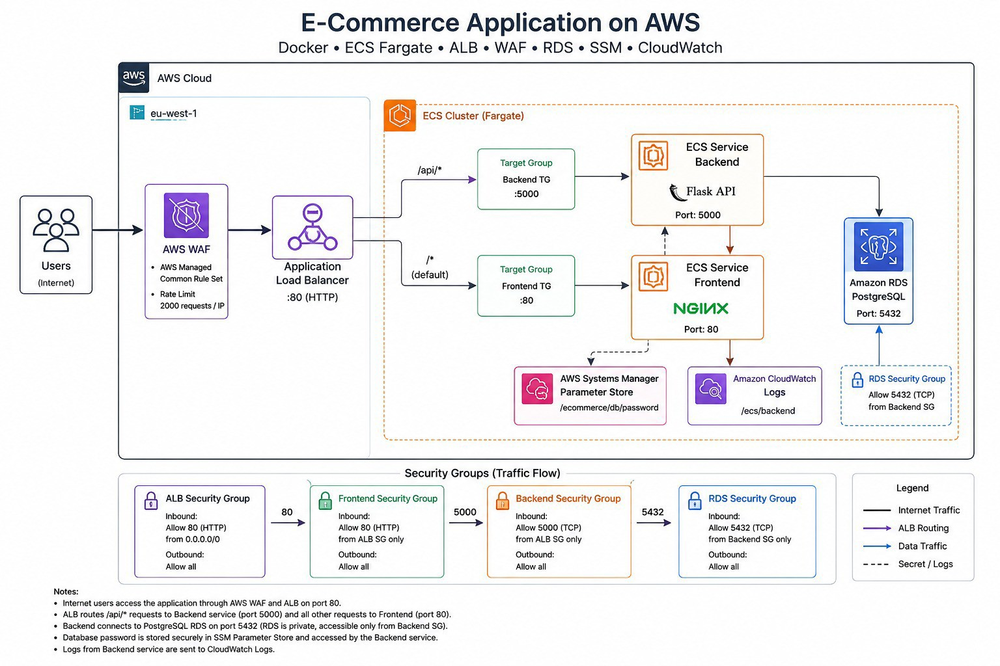
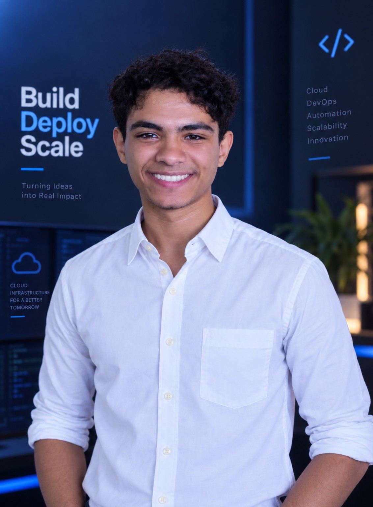

ITI / Cloud Fundamentals / Cloud Architecture Program
Networks · operating systems · virtualization · Linux administration · Python · Docker · Kubernetes · cloud infrastructure · containerized application deployment.
Preparing the digital engineering workspace...
EDTECH · CLOUD SECURITY · DEVSECOPS
I explain technology clearly, build systems, secure them, automate them, and teach others how the pieces fit together.

TEACHING / PROGRAM
eYouth · Ashbal Masr / Digital Egypt Cubs Initiative · MCIT
Structured technology learning across Level 2 Technology Fundamentals and Level 3 Data Analysis and Cyber Security. The verified scope includes content adaptation, progress, attendance and follow-up.
Scheduling · logistics · participant registration · primary communication between instructors, students and program management.
CURRENT LEARNING
Networks · operating systems · virtualization · Linux administration · Python · Docker · Kubernetes · cloud infrastructure · containerized application deployment.
Secure Cloud Computing · AWS Cloud Practitioner · Architecting on AWS · AWS Security Essentials · Security Engineering on AWS · IAM · secure data and infrastructure · monitoring and logging · incident response · compliance.
CCNAv7 · LAN/WAN · VLAN · STP · EtherChannel · routing protocols · network security · ACL · DHCP Snooping · DAI.
Cloud deployment models · virtualization · cloud security · AI integration.
SIMPLE STORE / FLAGSHIP CASE
Simple Store is the main technical case. The architecture below is the supplied project visual. GitHub is the deeper implementation layer.
OPEN REPOSITORY ↗
SIX TECHNICAL DIRECTIONS
CAPABILITY MAP
AWS · EC2 · VPC · IAM · GuardDuty · CloudTrail · Security Hub · Docker · Kubernetes · GitHub Actions · CI/CD · infrastructure as code
AWS Security Essentials · IAM · Threat Detection · Incident Response · Network Security · DHCP Snooping · DAI · ACLs · firewalls
CCNA · VLANs · DHCP · STP · EtherChannel · IPv4/IPv6 · Subnetting · Wireless LAN · Cisco Packet Tracer · GNS3
Python · C · Java · HTML · CSS · SQL · JavaScript · object-oriented design
Git · GitHub · Linux · MATLAB · VMware · VS Code · terminal workflow
Machine Learning · Supervised Learning · CNN · Neural Networks · Data Analysis · scikit-learn · TensorFlow
Program Coordination · Session Planning · Scheduling · Participant Management · Team Communication · Reporting
DEGREE
Bachelor of Technology
Communication Engineering · ECCAT, Ismailia
09/2023 - 06/2027
Joint scholarship with Beijing Institute of Technology.
ACADEMIC CONTEXT
Engineering education alongside cloud, networking, security, programming and machine learning work.
PROJECT RESEARCH
Cyber Bank Management System was presented at a Student Research Conference, ECCAT / Suez Canal University, 2025.
CREDENTIALS
CONTINUED CREDENTIALS
09 / CONTACT
Clear technical communication and hands-on engineering. Reachable via email, messaging, or social platforms.
El-Manazala, Dakahliya, Egypt